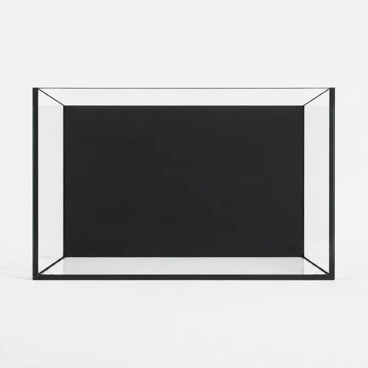
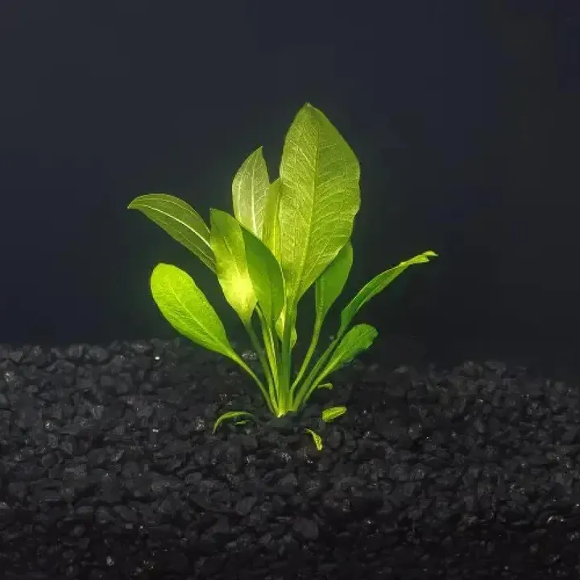

حوض جاهزمشهدٌ تراه.
مشهدٌ تراه.
وتبدأ منه.
ابدأ بمشاهدة الأحواض الجاهزة، واقرأ مكونات كل حوض وتفاصيله. الصورة نقطة البداية؛ والوصف يساعدك على فهم التكوين.
استكشف الأحواض الجاهزةمساحة الإلهام
ثلاث طرق للنظر إلى الحوض.
ابدأ بالمشهد، بالمساحة، أو بورقة خضراء.
ابدأ بمشاهدة الأحواض الجاهزة، واقرأ مكونات كل حوض وتفاصيله. الصورة نقطة البداية؛ والوصف يساعدك على فهم التكوين.
استكشف الأحواض الجاهزة
الزجاج يترك المجال للفكرة. استكشف الأحواض الفارغة، ثم جرّب مقاساتها في المصمم قبل العودة إلى النباتات والخامات.
استكشف الأحواض الفارغة
قارن أشكال الأوراق وأحجام النباتات وصورها في المجموعة. ابدأ بالتفصيل الذي يلفت نظرك، ثم افتح وصف النبات للتعرّف إليه.
استكشف النباتاتالخطوة التالية
غيّر أبعاد الحوض وتجهيزاته، واحفظ تصورك للعودة إليه لاحقًا في المتصفح نفسه.
افتح مصمم الأحواض